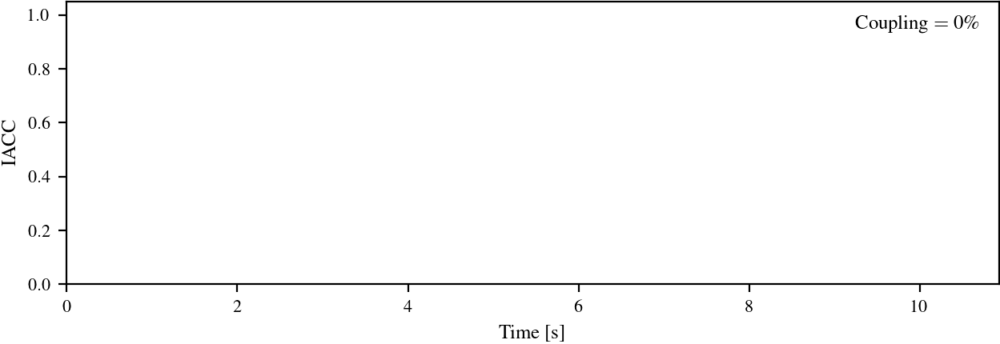
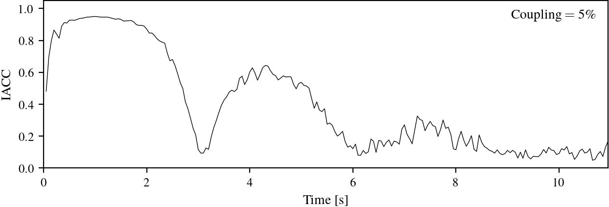
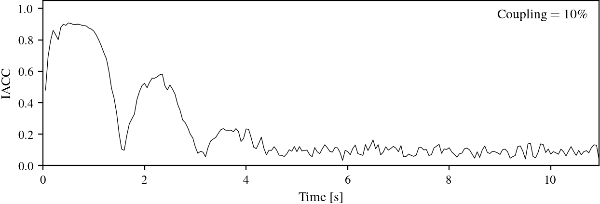
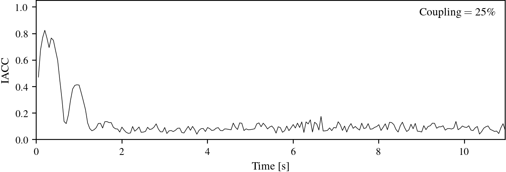
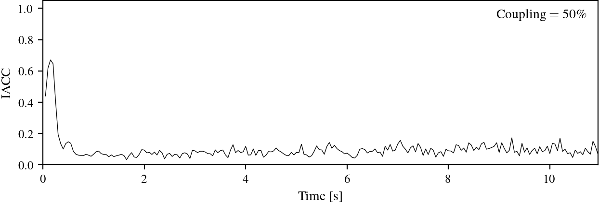
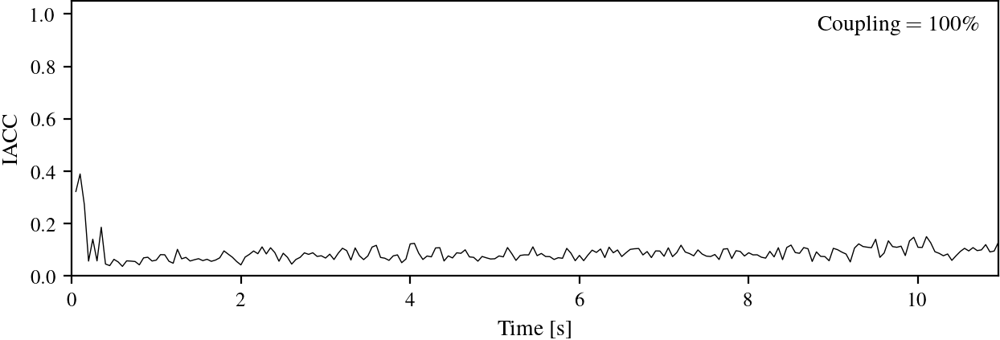
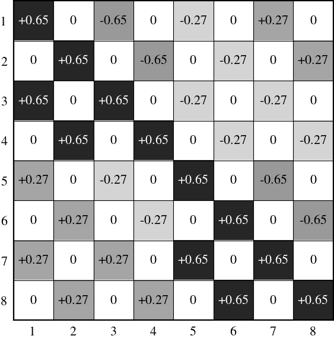
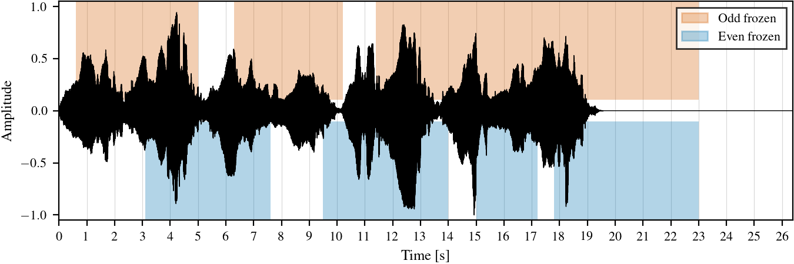

Reference configuration: the two halves of the network are fully independent. The reverb tail stays entirely on the left channel; the right channel remains silent.

Arturia
Montbonnot-Saint-Martin, France
andrea.coppola@arturia.com
This paper presents a framework for designing creative reverbs using parametric orthogonal feedback matrices on Feedback Delay Networks (FDNs) through recursive Kronecker products of 2D rotation and reflection matrices. By parameterizing each 2 × 2 kernel with a single angle, we construct a family of 2M × 2M orthogonal matrices that maintain losslessness while enabling continuous control over network topology. We then exploit their recursive definition to derive an efficient divide-and-conquer algorithm that computes the feedback operation with O(N log2 N) time complexity, matching the Fast Walsh–Hadamard Transform while offering parametric flexibility. Strategic manipulation of individual kernel angles enables creative sound design applications. The framework offers FDN designers an expressive, real-time tunable parametric matrix, balancing computational efficiency with intuitive control for creative reverberation design.
The Kronecker Feedback Matrix is built recursively from 2 × 2 rotation and reflection kernels, indexed θ1 (innermost) through θM (outermost). Each kernel level controls a structurally distinct mixing operation: θM governs the coupling between the two stereo halves of the network, θ1 governs the even/odd partition, and intermediate kernels are used to modulate the matrix over time. We exploit this independence for three creative applications that act on different levels and can therefore be combined: stereo cross-coupling (on θM), selective freeze via even/odd decoupling (on θ1) and matrix modulation (on θM−1, one level inside the outermost). The companion audio examples below illustrate each of these configurations.
Unless explictly stated, most audio examples are rendered through the same network: a 32 × 32 Feedback Delay Network with a Kronecker feedback matrix built from rotation kernels, rendered from a reference implementation of the design. (The modulation section, §2.3, uses a smaller decoupled network to make individual resonances more audible). Although the framework also admits reflection kernels (covered in the paper), the demonstrations here use rotation kernels only, for clarity. Delay lengths are coprime, ranging from approximately 20 ms to 200 ms. Unless explicitly stated, the outermost coupling angle θM is left at its fully coupled value (100%, θM = π/4); other angles default to the values used in the corresponding section. No damping filters or additional all-pass diffusion stages are applied, to keep the underlying matrix behaviour as transparent as possible.
The following audio examples are organised into three groups corresponding to the three creative configurations: stereo cross-coupling (§2.1), selective freeze (§2.2) and modulation (§2.3). Each group is preceded by its dry source material, followed by the wet renderings produced by the Kronecker FDN under the parameter setting indicated in the caption. Wet renderings are 100% wet (reverb output only, with the dry source supplied separately above each group). Headphone listening is recommended, particularly for the stereo examples.
Varying the outermost kernel angle θM from 0 to π/4 progressively introduces off-diagonal coupling blocks between the two stereo halves of the network. At θM = 0 the channels are independent; at θM = π/4 the two halves are fully coupled and the network behaves as a single, maximally diffusive unified FDN. The examples below sweep through this continuum on a single piano note hard-panned to the left, so the amount of energy spreading into the right channel directly visualises the coupling. Percentages refer to position along the [0, π/4] range.
Below each rendering we plot the inter-aural cross-correlation (IACC) of the corresponding stereo impulse response over time, computed over a sliding window. IACC measures the similarity between the left and right channels: values near 1 indicate near-identical channels (a narrow, centred image), while values near 0 indicate decorrelated channels (a wide, enveloping image). At 0% coupling the right channel is silent, so the IACC is undefined and the plot is left blank; for all coupled settings the reverberant tail decorrelates toward a low steady-state value.
Reference configuration: the two halves of the network are fully independent. The reverb tail stays entirely on the left channel; the right channel remains silent.

A small amount of cross-feedback has energy slowly leaking into the right channel. The note's reverb tail sweeps from the left channel into the right and back again.

More cross-feedback than example 02: energy crosses into the right channel sooner and the stereo image begins to fill in, while the original left-hand placement of the note is still clearly heard.

Moderate coupling. Energy spreads across the panorama quickly after onset, yet the early reflections remain correlated enough that the source direction is still perceptible before the tail decorrelates.

Stronger cross-feedback: the energy leaks from left to right faster, but directionality is preserved.

The two halves are fully merged into a single, maximally diffusive unified FDN. Diffusion is uniform across the stereo panorama.

Setting θ1 = 0 decouples the network into even- and odd-indexed delay lines. A freeze operation can then be applied independently to either subset by zeroing the input mixing into the frozen subset and setting its absorption coefficients to unity, sustaining the current state indefinitely while the other half continues to process new input. The first three examples isolate the mechanism. The fourth is a musical showcase.

The same dry source rendered through the FDN with no freeze engaged. Baseline reference for the three freeze variations below.
The even-indexed half of the network is frozen on the first note. The odd half keeps diffusing freely so the remaining notes ring out naturally over the held tone.
Symmetric counterpart of example 07. The first note is captured on the odd half this time while the even half handles the rest. Similar effect to the previous example except that given the different delay times, the reverb quality is slightly different.
Both halves are now in use: the even half freezes the first note and the odd half freezes the second one. The two captured notes sustain together as a held interval while the network has no remaining free subsections to process new input.
A musical application of selective freeze. Two freezes operate in parallel and capture short pulses at different points throughout the music loop. Each pulse stores a snapshot of half of the network at that moment. Alternating between the even and odd halves lets us assemble pad sounds from those captured fragments and swap in different parts of the source as the loop evolves.

To isolate the perceptual effect of matrix modulation, the examples in this section use a smaller 16 × 16 network with the outermost angle set to θM = 0, which decouples it into two independent 8 × 8 sub-networks (one per stereo side). This configuration thins the modal density and makes individual resonances more clearly audible than they would be in the 32-channel network used elsewhere. Modulation is applied to the kernel angle θM−1 (one level inside the outermost; here M = log2 N = 4, so the modulated angle is θ3). The angle follows a sinusoid centred on π/4, with the stated depth as its amplitude: θM−1(t) = π/4 + depth · sin(2π·rate·t). Matrix modulation decorrelates the modal response over time and softens the metallic ringing of the static configuration; unlike delay-line modulation, it affects only the routing coefficients between delay lines and substantially reduces the chorus-like artefacts associated with the former. The three examples share the same dry source and present three modulation regimes: off, subtle, and aggressive.
Static feedback matrix, no modulation applied. The fixed modal resonances of the network are clearly audible as metallic ringing in the chord tails. This is the baseline against which the next two examples are compared.
Rate 0.2 Hz, depth 0.2 π. Light modulation: the metallic ringing of the static configuration is audibly smeared.
Rate 2 Hz, depth π (the full angular range). At this extreme the modulation is clearly audible as a discrete artefact in its own right rather than transparent diffusion. Shown to illustrate the upper end of the operating range.